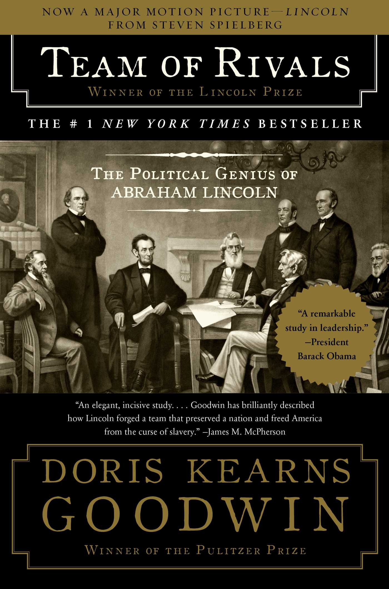

Team of Rivals
⭐️⭐️⭐️⭐️⭐️
Format: üéß (41 hours 32 minutes)
At this point, I've read over 5,000 pages about the Civil War, or things taking place right around it. I don't recommend doing that, unless you truly find it interesting, or are similarly trying to gain an appreciation for one of your grandfather's greatest interests. Though I originally started for the latter reason, it didn't take long to shift to the former, and I'm happy to give you some insight into what might be a good fit for you.
If you're interested in Abraham Lincoln, this is the book for you. It gives so much insight into him, and his maneuverings. What a remarkable person, truly. I don't want to spoil the ending, but I will say I was truly sad with the build-up to the events at Ford's Theater, knowing exactly what was coming. Despite having read this book, I'd love to read another one about Lincoln. Truly, an incredible person.
If you think you might want a decent view into the time period, and maybe a taste of the Civil War itself, then you might consider Battle Cry of Freedom.
If you really want to get into the Civil War, then go for the gold standard - Shelby Foote's gigantic The Civil War. Despite my original lack-luster review, I'm highly tempted to go back through those books. I happened to start with them, and might be a bit much for a first-time Civil War reader.
- Prior: Twelve Years a Slave
- Next: Quiet